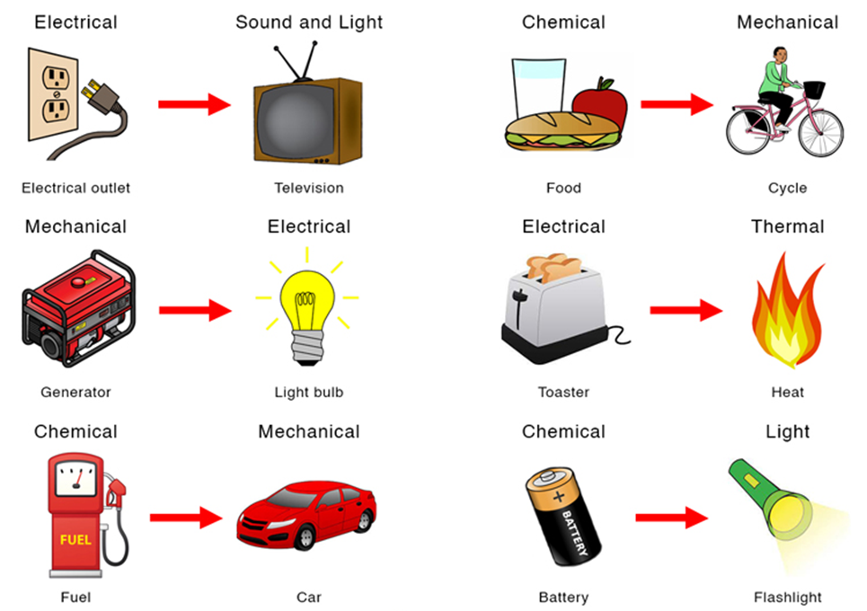

Conservation of Energy
Types of Energy and the Law of Conservation of Energy
You use mechanical energy (a combination of kinetic energy and gravitational potential energy) to do mechanical work every day.

Energy Transformations
The conversion of energy is called an energy transformation: the change of one form or type of energy into another.

Quantifying Energy Transformation
Let us see how the law of conservation of energy is demonstrated when a 65.0 kg diver performs a handstand dive from a 10.0 m high diving platform into the water below.
Let us analyze the dive in terms of the diver’s potential energy, Eg, kinetic energy, Ek, and total mechanical energy, Em, which is the sum of Eg and Ek. We will calculate these values for three phases of the dive occurring at three distinct moments in time: the phase before the diver leaves the platform, the phase when the diver has travelled half the distance to the water’s surface, and the phase when the diver’s fingers reach the water’s surface. We will assume that the water’s surface is the reference level, where Eg= 0 J.
PHASE 1: BEFORE THE DIVE
The diver begins the dive in a handstand position on the platform of the diving tower (Figure 3). Since he is motionless, the diver’s kinetic energy is equal to zero (Ek= 0 kJ), and his gravitational potential energy is calculated as follows:


At this point in the dive, the diver’s kinetic energy is equal to 0 J, and his potential energy is equal to 6.4 kJ. The diver’s total mechanical energy is equal to 6.4 kJ, the sum of his gravitational potential energy and his kinetic energy:

PHASE 2: AT THE HALFWAY POINT
When the diver leaves the platform, he will accelerate toward the water at 9.8 m/s2 (assuming negligible friction with the air). At the halfway point, the diver is 5.0 m above the water’s surface (Figure 4). At this point in the dive, the diver’s gravitational potential energy may be calculated as follows:


PHASE 3: AT THE WATER’S SURFACE
When the diver reaches the surface of the water, his height above the water is 0 m
(Figure 5). Thus, Eg= 0 J since Eg= mgh and h = 0 m. By this point, the diver has been accelerating for the full distance between the platform and the water. His kinetic energy is calculated as in Phase 2:


APPLYING THE LAW OF CONSERVATION OF ENERGY
Example |


|
|